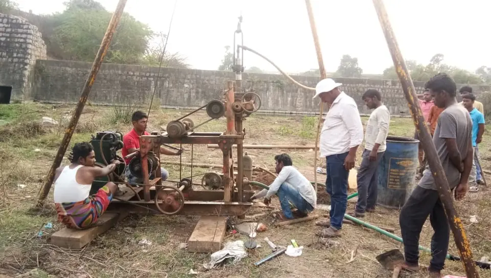
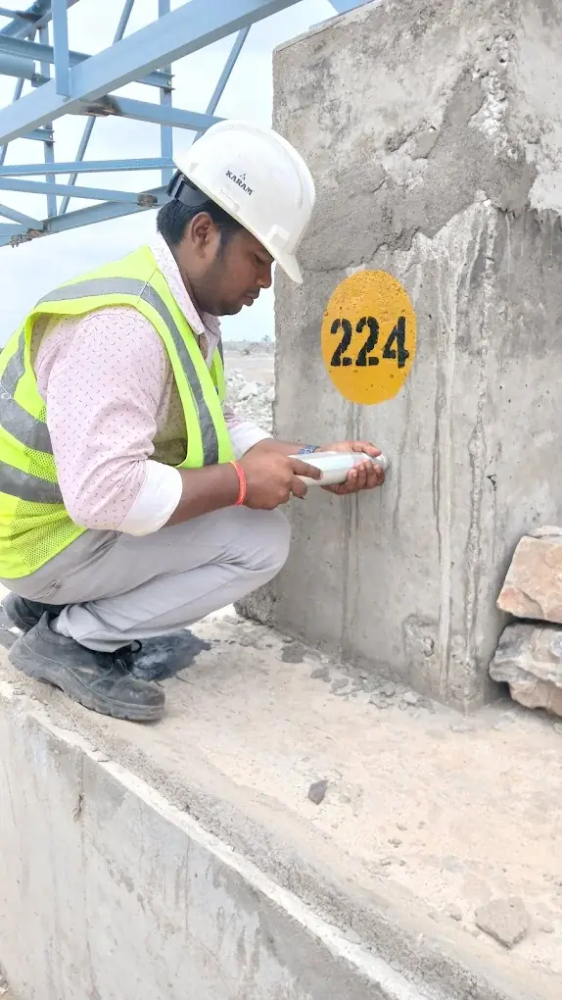
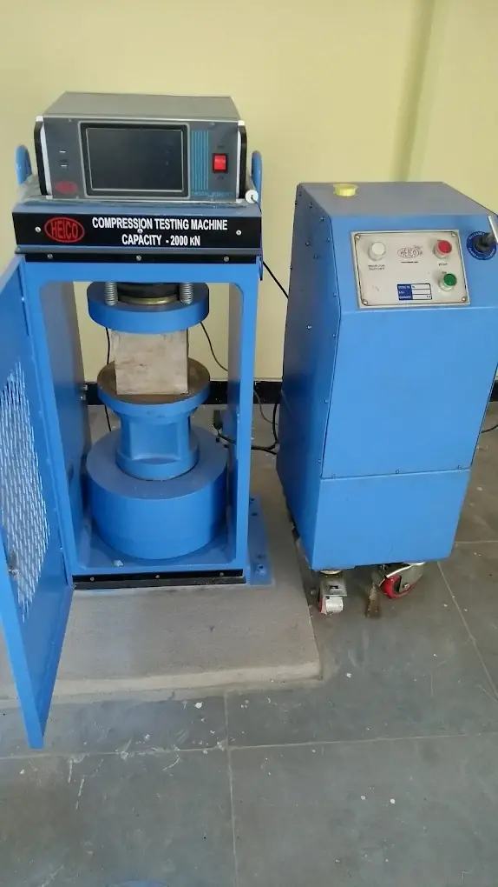
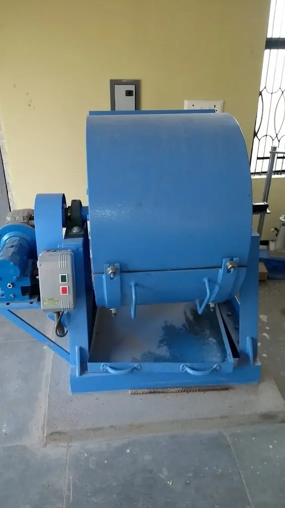
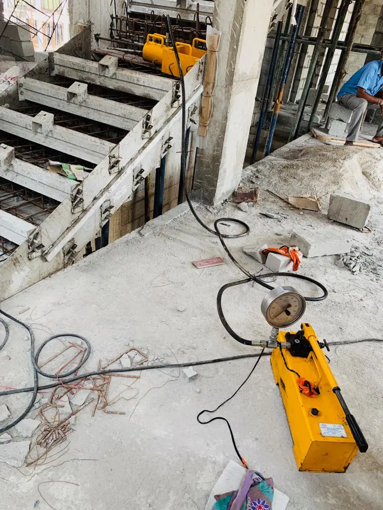
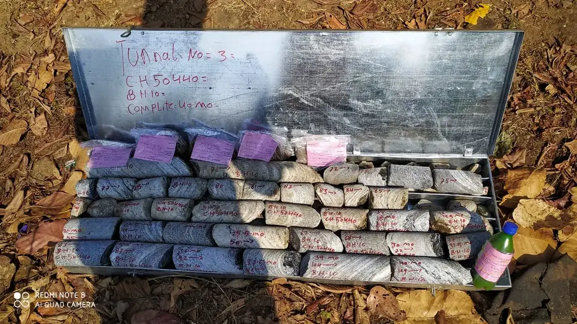

Civil engineering & construction material testing services in Hyderabad
Seven testing disciplines, one accountable laboratory. Choose a service to see the tests we perform, the IS codes we follow and when you need them.

Geotechnical Investigation & Soil Testing
Boreholes, SPT, plate load tests and laboratory soil testing with safe bearing capacity reports for foundation design.

Non-Destructive Testing (NDT) of Concrete
Rebound hammer, UPV, core tests, cover meter, half-cell and pull-out tests to assess existing structures without damaging them.

Concrete & Cement Testing
Cube compressive strength, flexural strength, mix design and complete physical testing of cement in our NABL lab.

Aggregate & Sand Testing
Gradation, silt content, specific gravity, impact, crushing and Los Angeles abrasion tests for coarse aggregate, river sand and M-sand.

Steel & Reinforcement Testing
Tensile, bend–rebend, mass per metre and chemical tests on TMT bars and structural steel to IS 1786 and IS 2062.

Brick, Block & Paver Testing
Compressive strength, water absorption, efflorescence and density of clay bricks, fly ash bricks, concrete & AAC blocks and pavers.

Water & Chemical Testing
Suitability of water for construction (IS 456), soil and concrete chemistry: pH, chlorides, sulphates and solids.
Road & Bituminous Materials Testing
Bitumen penetration, softening point and ductility, Marshall stability, binder content and field density for roads and pavements.
Talk to a testing engineer
Tell us about your site or problem. We will recommend the right tests and the number of samples, free of charge.
Book a consultationMore testing services
Planning a project or stuck on an approval?
Tell us what you're building and what you need to prove. We'll recommend the right tests, give you a clear quotation and schedule the work.